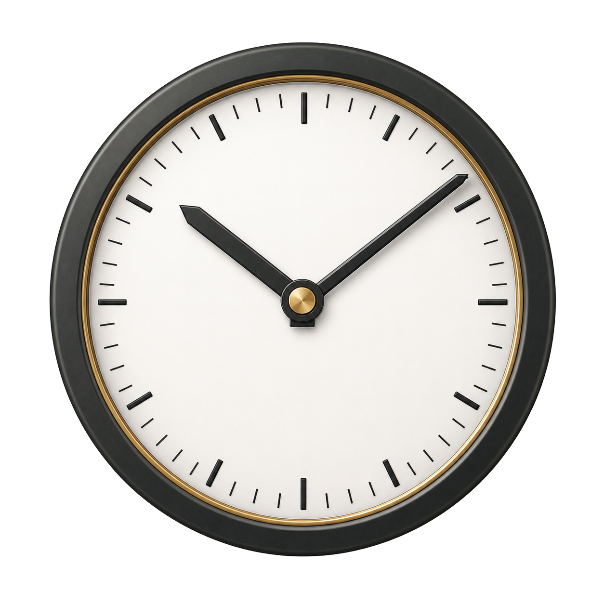
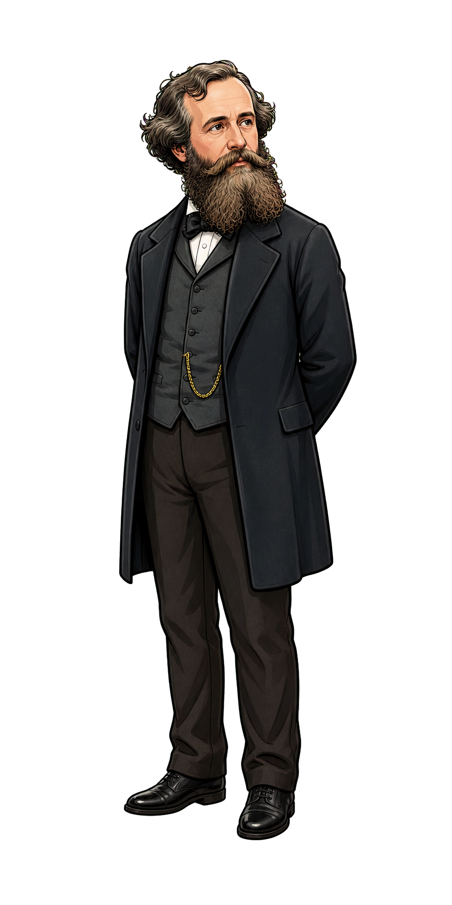
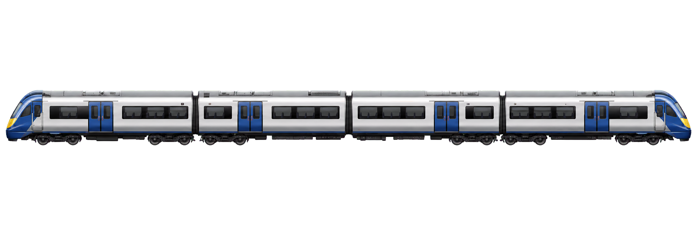
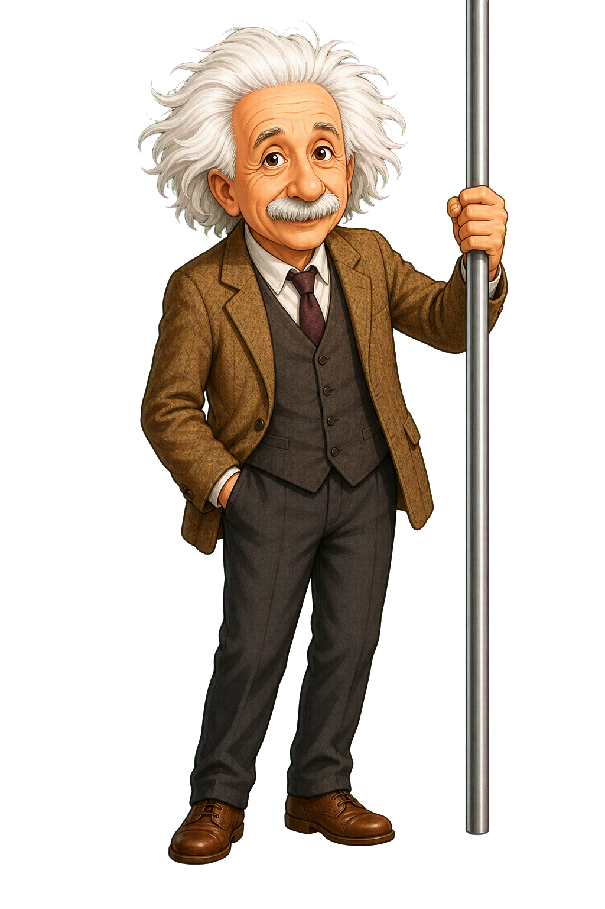

Dilatación temporal
Δτ = Δt / γ
Maxwell mide el tiempo coordenado de la estación. Einstein mide el tiempo propio del tren.
Relatividad especial · marcos inerciales
Maxwell permanece en la estación mientras Einstein viaja en el tren. La fecha de cada observador avanza de forma distinta según la dilatación temporal.




Maxwell mide el tiempo coordenado de la estación. Einstein mide el tiempo propio del tren.
Cuando la velocidad se acerca a c, el reloj del tren acumula menos tiempo.
No se trata de que el reloj “funcione mal”: cada observador mide correctamente su propio tiempo.